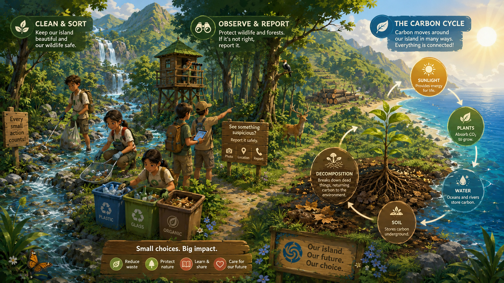

1. 永續教育行動
強調這不只是遊戲開發案，而是一個結合教學、試玩、工作坊與成果評估的永續行動方案。
相較於單向講述，經營遊戲能讓玩家親自面對時間、體力、資源與環境後果：過度採集會讓森林恢復變慢，水域垃圾會影響魚群，盲目擴張耕地會壓縮棲地，願意修復與休養則會讓生態逐步回升。

圖像風格已轉成「教育情境＋永續科普」，可用於說明小遊戲與知識卡設計方向。
從品牌敘事到玩法說明，都盡量圍繞這四個核心，讓外部訪客、評審與合作老師能快速對焦。
強調這不只是遊戲開發案，而是一個結合教學、試玩、工作坊與成果評估的永續行動方案。
以「生活智慧」與「自然共生」作為靈感來源，不直接使用具有真實神聖指涉的元素，降低誤用風險。
知識不是硬塞進去的教材，而是透過任務、提示、知識卡與小遊戲自然出現在遊玩過程中。
透過前後測、回饋問卷、工作坊參與數與成果報告，讓永續學習成效有跡可循。
以遊戲與工作坊促進環境與永續素養。
讓玩家理解資源節制、循環利用與減少浪費。
將碳循環、氣候議題與日常行動串起來。
從棲地、水源與生物多樣性出發，理解陸域生態保護。
暫名《森循島》是一款以永續教育為核心的養成經營遊戲。玩家透過農耕、採集、釣魚、工藝與環境修復，在架空的山海島嶼中學習垃圾污染、水域生態、資源節制與碳循環，理解與自然共生的價值。